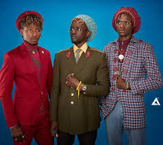

How did you guys meet?
We met at Kenya National Theatre (KNT). There was a play on cancer awareness and Mordecai was one of the judges, the play was a fusion of drama, poetry and music.
Ken was playing all the soundtracks with his guitar and after the play we continued jamming at
KNT after we found ourselves idle. From there H_art the band was formed.Why did you pick the name H_art the Band?
Means art from the heart. The underscore is the bridge between the heart and art because aside from music we do art as well, we are artistic people.
You all have dreadlocks, is that on purpose?
It was an artistic coincidence.

How has it been trying to make a mark in an industry dominated by established bands like, Just a Band, Sauti Sol and Elani?
First off we are not competing; we believe
that each and every artiste has their own domain, gifted in all areas.
We are here for one cause and it is art.
The best person to compete with is yourself.
What genre is your music?
We like to call it Afro-Poetry which is music with an African touch fused with poetry.
Authored by G.Mugwe Reach me on:
Mar 23/03/2017 8:56